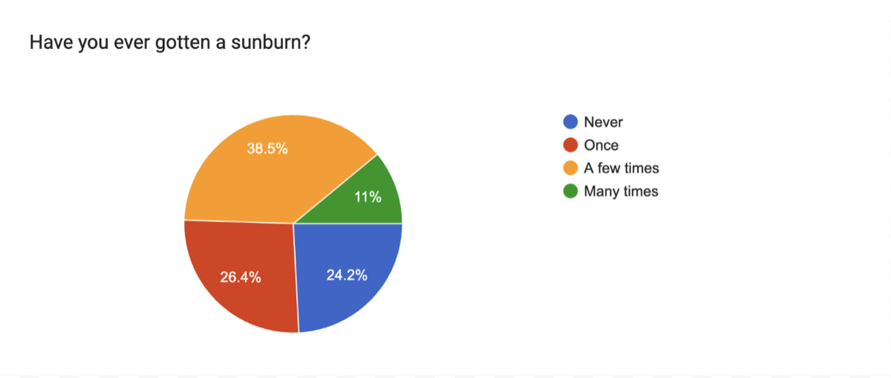
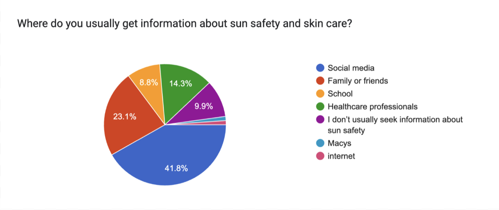

Welcome to Glowify’s last blog for the summer survey series! We started this survey to find out what people know about sun safety. What we ended up learning was a bit different, and I want to go through the three things that stuck with me.
The first is that knowing and doing are most definitely not the same thing. Almost half of the people we surveyed (47.3%) gave daily sun protection a 5 out of 5, but only 26.4% always put on sunscreen outside. Nobody we talked to seemed to think sun protection was pointless. Most people just don’t do it every time, and that’s something information alone might not fix. This is also why our posts have been focused on easy habits and not just facts.
The second is how common sunburns are. Only 24.2% of people have never been burned, and 11% said they’ve been burned many times. Before this survey, I think we assumed sunburns were something that was not too common to see. The results show that for a lot of people it happens again and again. It also changed how we think about the sunburn question.

The third is where people are looking for answers. Social media was the top source at 41.8%, and healthcare professionals (14.3%) and school (8.8%) were far behind. At the same time, what people want to learn is specific and useful, which is how to choose a sunscreen and what skin cancer warning signs look like, both at 40.7%. People are unable to find answers where they usually look, which is another reason we’re writing this blog!

There are also things we’d do differently. We didn’t ask why people skip sunscreen, and we didn’t ask how they apply it. Those questions would have helped a lot, and they’re the first ones we’d add next time. We also only reached people in the places we visited, so our next goal would be to see if similar trends emerge in other communities.
The best part of this project for me was hearing what strangers thought about sunscreen, what they’d been told, and what they weren’t sure about meant a lot to our team. Every person we met shared a little of their own life with us.
Through our surveys, we learned how much people have to say when you actually ask them. Thank you so much to everyone who stopped and talked with us!